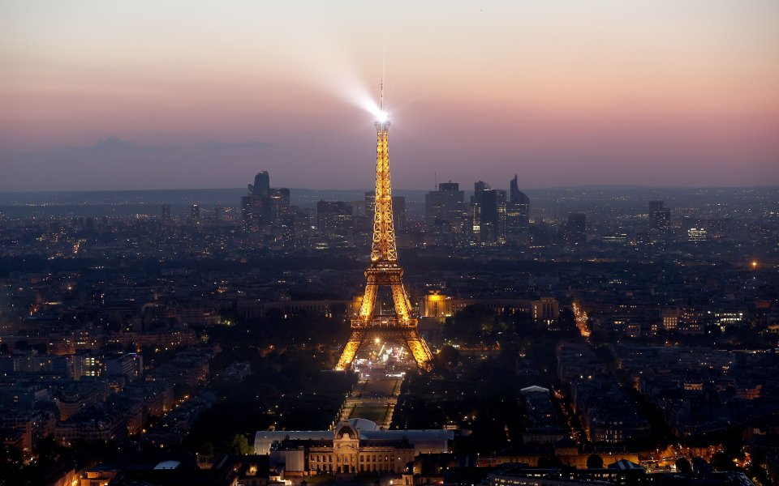
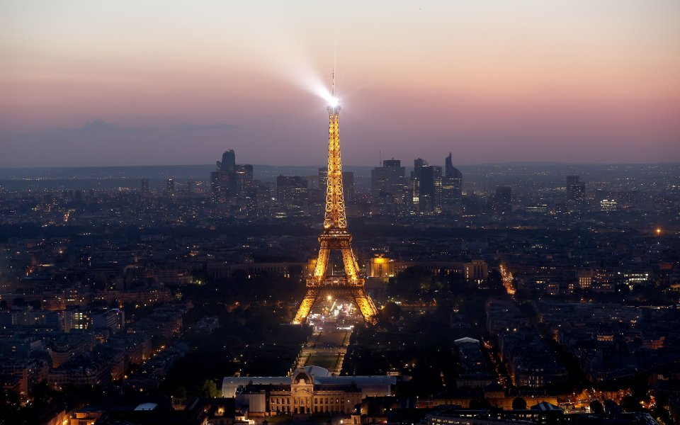

Айфеловата кула е желязна решетъчна кула в парка „Марсово поле“ в Париж, Франция. Носи името на инженер Густав Айфел, чиято фирма я проектира и изгражда.Наричана от парижани „Желязната дама“, кулата е построена между 1887 и 1889 година като входна арка на Световното изложение и първоначално е критикувана за своя дизайн от водещи френски художници и интелектуалци, но с времето се превръща в глобална културна емблема на Франция и една от най-разпознаваемите конструкции в света. Айфеловата кула е най-посещаваната забележителност с входна такса в света през 2015 година тя е изкачена от 6,91 милиона души. Кулата е висока 324 метра, приблизително колкото 81-етажна сграда, и е най-високата конструкция в Париж,като основата ѝ е квадратна с дължина на страната 125 метра.
Ако искате допълнително информация за Кулата,кликнете тук